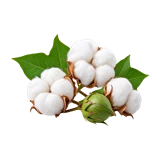

होम / कपास

कपास का भाव आज | Cotton / Narma Mandi Price Today
कपास के आज के उपलब्ध मंडी भाव देखें—राजकोट, अमरेली, गोंडल, जोधपुर, श्रीगंगानगर, गोलूवाला और अनूपगढ़ के मॉडल, न्यूनतम और अधिकतम रेट।
नीचे मंडी-वार सूची में कपास के उपलब्ध भाव दिए हैं। मंडी के नाम पर क्लिक करके उस मंडी की दूसरी फसलों के भाव भी देख सकते हैं।
कपास और नरमा का भाव: मंडी में सही रेट कैसे समझें
राम-राम किसान भाइयों! FasalBhav पर आपका स्वागत है। 'सफेद सोना' (White Gold) कही जाने वाली कपास और नरमा हमारे कई राज्यों (जैसे राजस्थान, हरियाणा, पंजाब और गुजरात) के किसानों की मुख्य नकदी फसल है।
मंडी में अपनी मेहनत की फसल ले जाने से पहले सही भाव और बाज़ार का रुख जानना बहुत ज़रूरी है। ऊपर दी गई तालिका में आप आज अलग-अलग मंडियों के कपास के रेट देख सकते हैं। आइए जानते हैं कि मंडी में कपास का सही दाम कैसे तय होता है और आप अपनी उपज का सबसे बेहतरीन भाव कैसे ले सकते हैं।
कपास, नरमा और रूई के भाव में अंतर
ऊपर की सारणी में खेत से आने वाली कपास और नरमा के उपलब्ध मंडी रिकॉर्ड दिए हैं। जिनिंग के बाद बीज अलग करके मिलने वाली रूई (Lint) का कारोबार अलग रूप और कई जगह अलग इकाई में होता है, इसलिए रूई के भाव को कपास या नरमा के प्रति क्विंटल भाव से सीधे नहीं मिलाना चाहिए। सारणी में American, Desi और Other जैसे किस्म नाम तथा FAQ या Non-FAQ जैसे grade उसी प्रकाशित source record के अनुसार दिखते हैं; तुलना उसी किस्म और grade के बीच करें।
कपास का 'टॉप भाव' (Maximum Price) कैसे पाएं?
कपास एक ऐसी फसल है जिसमें क्वालिटी का भाव पर सीधा और सबसे बड़ा असर पड़ता है। अगर आप चाहते हैं कि आपका माल मंडी में सबसे ऊँचे रेट पर बिके, तो इन 3 बातों का विशेष ध्यान रखें:
- चुगाई में सफाई (Clean Picking): कपास में सूखे पत्ते, डंठल या कचरा (Trash) नहीं होना चाहिए। साफ और कम कचरे वाले लॉट को बेहतर grade मिल सकता है। अधिक कचरा, पत्ते या डंठल होने पर बोली कम हो सकती है।
- नमी (Moisture) का रखें खास ध्यान: कपास में नमी की मात्रा भाव तय करने में सबसे बड़ी भूमिका निभाती है। सुबह की ओस या बारिश की नमी वाली कपास को अच्छी तरह धूप में सुखाकर ही मंडी लाएं। नमी वाले माल में वजन घटने के डर से व्यापारी बहुत कम बोली लगाते हैं।
- दागी या पीली कपास को अलग रखें: कई बार बारिश या कीट के कारण कुछ कपास पीली या काली पड़ जाती है। इसे अच्छी सफेद कपास के साथ न मिलाएं। थोड़ी सी खराब कपास आपके पूरे शानदार ढेर (लॉट) का भाव गिरा सकती है।
कपास की किस्में और भाव का अंतर
सारणी में कपास के source records किस्म और grade के साथ दिखते हैं, इसलिए अलग नाम वाले रिकॉर्ड का भाव सीधे एक जैसा नहीं मानना चाहिए।
- नरमा/American Cotton: सारणी में American variety वाले रिकॉर्ड अलग दिखाई देते हैं। Bt Cotton का matching source record भी अलग पेज बनाने के बजाय इसी कपास पेज में शामिल होता है। किस्म और grade देखकर ही भाव मिलाएं।
- देशी कपास (Desi): सारणी में Desi नाम से दर्ज रिकॉर्ड को American variety से अलग देखकर तुलना करें। रेशे और लॉट की गुणवत्ता के अनुसार दोनों के भाव अलग हो सकते हैं।
- Other: स्रोत में स्पष्ट किस्म उपलब्ध न होने पर रिकॉर्ड Other नाम से दिखाई देता है। ऐसे रिकॉर्ड को किसी खास American, Bt या Desi किस्म का भाव न मानें।
मंडी भाव को सही तरीके से कैसे समझें?
ऊपर दी गई भाव-तालिका में तीन तरह के रेट दिए गए हैं। अधिकतम भाव देखकर कभी भी भ्रमित न हों:
- न्यूनतम भाव: सारणी के उपलब्ध रिकॉर्ड में दर्ज सबसे कम भाव। इसे हर बार कचरे या अधिक नमी वाले माल का भाव नहीं मानना चाहिए।
- अधिकतम भाव: सारणी के उपलब्ध रिकॉर्ड में दर्ज सबसे ऊँचा भाव। यह किसी खास किस्म, grade या लॉट का भाव हो सकता है।
- मॉडल भाव (Model Price): यह उस दिन मंडी में प्रमुख रूप से दर्ज प्रतिनिधि भाव है। अपनी फसल की किस्म और grade मिलाकर बाजार की सामान्य स्थिति समझने के लिए मॉडल भाव देखें।
भाव किन बातों से घटते-बढ़ते हैं?
कपास के भाव पर स्थानीय मंडी की आवक, जिनिंग इकाइयों की खरीद, सूत (Yarn) बनाने वाली स्पिनिंग मिलों की मांग, घरेलू कपड़ा बाजार, अंतरराष्ट्रीय कपास बाजार की स्थिति और विदेशों में कपास के उत्पादन का असर पड़ता है।
तेज़ और सटीक मंडी भाव सीधा अपने मोबाइल पर पाने के लिए हमारा WhatsApp ग्रुप जॉइन करें।
अक्सर पूछे जाने वाले सवाल
Narma ka bhav today
इसकी विस्तृत जानकारी ऊपर दी गई है। कृषि जिंसों के ये दाम दैनिक आवक, गुणवत्ता और बाजार की मांग के अनुसार बदलते रहते हैं। सटीक और ताज़ा आंकड़ों के लिए कृपया ऊपर दी गई तालिका को देखें। हमसे जुड़े रहने के लिए WhatsApp ग्रुप जॉइन करें।